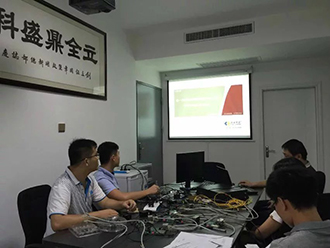
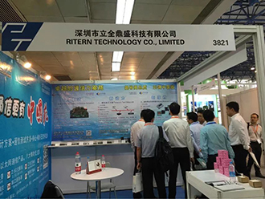

Founded in 2011, Ritern Technology is a leading provider of communication products and system solutions. It is a national high-tech enterprise with a number of independent intellectual property rights and a national AAA credit rating with advanced technology and design capabilities as its core. The company is a professional provider of the latest product design solutions, product testing solutions, software development services and core functional modules and ODM services for communication customers.We have long been committed to the research, innovation and application of new technologies in the field of communication. We have a professional communication laboratory with testing equipment in Shenzhen. The company maintains a research and development investment of no less than 10% of sales every year. With less than 5 items/year and 15 software/years of software copyright, we continuously provide customers with the latest technology value-added services, patent and intellectual property licenses and complete solutions. After years of technical accumulation and continuous innovation, Lizhisheng Technology has been leading in the access network and convergence network communication solutions, and has emerged in the core network communication solution, and during the exhibition of Beijing International Information and Communication Exhibition in September 2016. Receive exclusive interviews and reports from CCTV CCTV.
In terms of product design, Ritern Technology provides software and hardware design solutions to industry customers.Products designed include: fiber optic transceivers, network management switches, PoE switches, industrial ring switches, routers, gateways, IoT, G/EPON, MSTP, PTN, SDN, IP-RAN, WLAN, Wi-Fi modules, Radio frequency identification products (RFID), etc. The developed software covers hierarchical communication protocols such as L2, L2+ and L3. The software system includes a fool-type assembly program, a WEB network management system, and a background unified management system. Design elements include device selection, software platform, software architecture, PCB layer size, external size, and shell layout. The published documents include schematics, layout, PCB, patch parameter table, BOM, and management software. After years of hard work, the company has become a leading product design solution provider (Design House) in China, and has established a leading position in five aspects: software architecture platform, hardware series, Lay, device selection, BOM cost, and production efficiency. It is the best partner for customers to quickly launch products to the market; we have become the behind-the-scenes hero of the domestic and international industrial chain that is well-supported by domestic and international electronic communication companies.
In terms of product testing solutions, the company relies on the extensive and solid customer base of the domestic communications industry and a deep industry background to provide customers in all parts of the country with the latest and most cost-effective testing methods and measuring equipment, and actively promote product testing solutions. Renewal, automation, intelligence and efficiency improvement, contributing to the evolution of China's electronic communications industry from "Made in China" to "China's Smart Manufacturing".The company focuses on the application and promotion of new technologies. With the comprehensive and in-depth understanding of product performance, the company can build a set of efficient, low-cost, universal and automated from the perspective of manufacturers. Production process test platform and R&D inspection platform for the entire process. The test equipment supplied includes: 10/100M*1G*2.5G*10G*40G*100G, speed, wired and wireless, portable and desktop, L2～L7 communication protocol, production and R&D versions. Various types of network testers; oscilloscopes, functions/arbitrary waveform generators, spectrum analyzers, RF signal sources, digital multimeters, programmable linear DC power supplies, etc. At present, the company has become a priority partner and key promotion media for first-class measurement equipment brands at home and abroad.
In terms of ODM business, the company can provide one-stop service from concept, design, production, testing, packaging to delivery according to customers' specific software and hardware platforms, performance indicators, port number, appearance shape, size and other specifications and requirements. . The product form can be a finished product, a core module or a single board, or an application software. The company's excellent design capabilities and technical level ensure that customers can bring products to market in a short period of time. It is the best choice for brand manufacturers at home and abroad, and also a partner of Chinese and foreign network operators, system integrators and engineering partners. . Long-term orders have been obtained from customers in North America, Europe, Southeast Asia, Africa and South America.
To promote technical exchange, resource sharing and project cooperation, we have an open professional communication laboratory in Shenzhen, equipped with Spirent network tester, BigTao network tester, TestStorm network tester, StormFi wireless tester, V8 mobile network tester. , xnSight network monitoring and operation and maintenance system, IQview wireless tester, Rigol oscilloscope, Tek spectrum analyzer, G/EPON system, EoC system, WLAN system and various levels of switches, etc., can do network simulation for wired and wireless communication products and their systems. And performance test analysis, network monitoring and operation and maintenance analysis. Every year, more than 400 people come to our company for technical exchanges. Welcome new and old customers or upstream and downstream manufacturers to come to our company for technical exchanges.
Ritern Technology has always practiced the mission of “advocating communication and good technology and leading the new trend of the program”. With professionalism and enthusiasm and innovative ideas, it is in line with the trend of world science and technology development and China's modernization, focusing on and committed to electronic communication. The research, innovation and application of new technologies have become a new force in China in the field of optical communication, industrial communication and communication big data with high-tech new solutions. As of mid-2017, we have served more than 500 domestic and foreign customers, and we look forward to more distinguished customers and suppliers to join the company to achieve a win-win situation and create a better future.